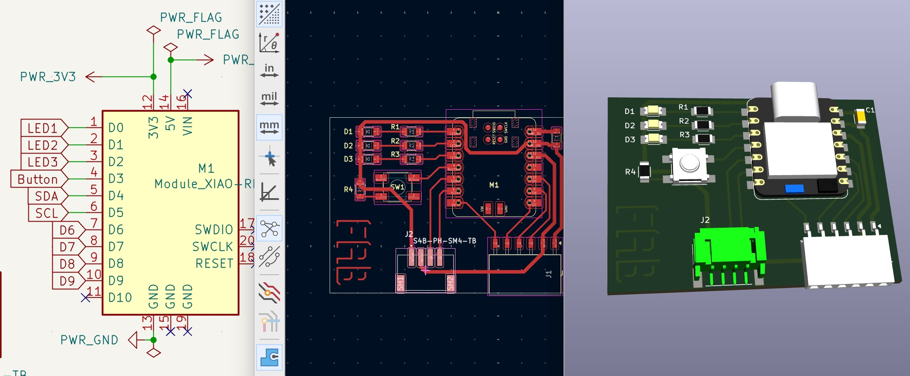
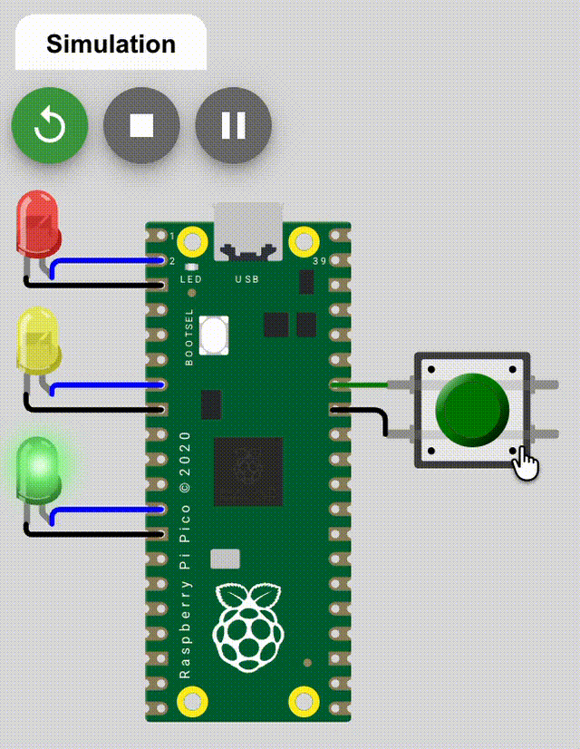
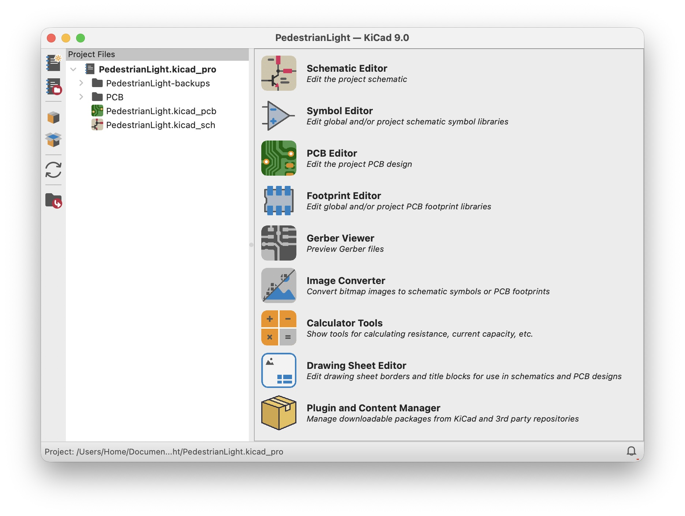
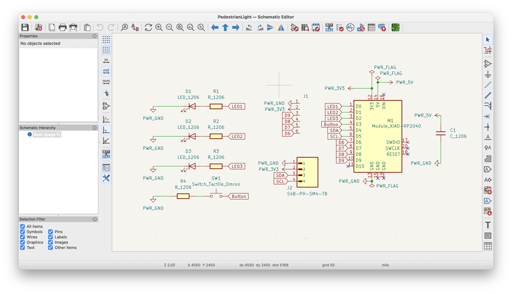
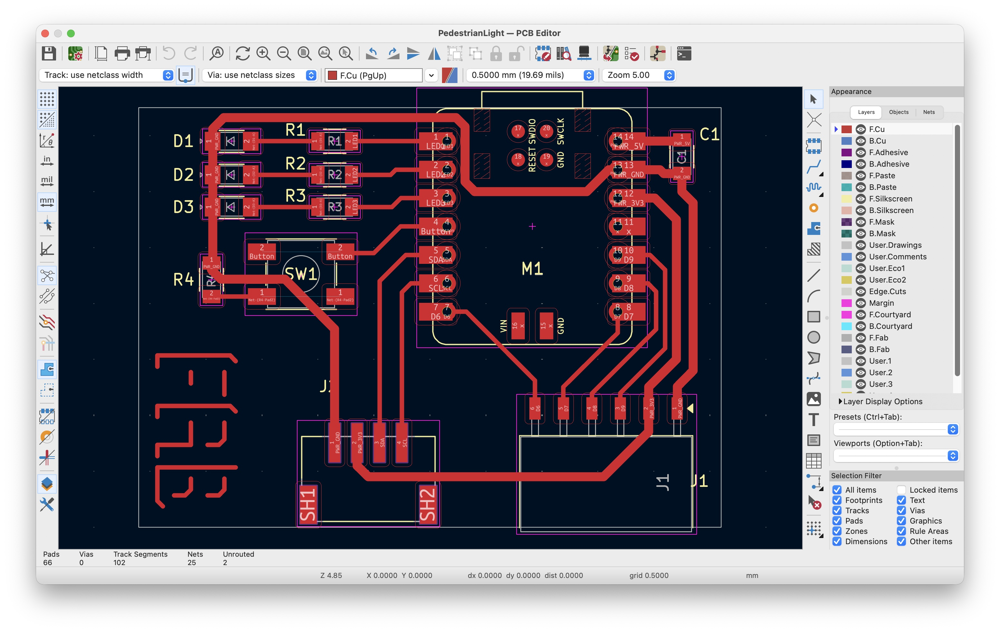
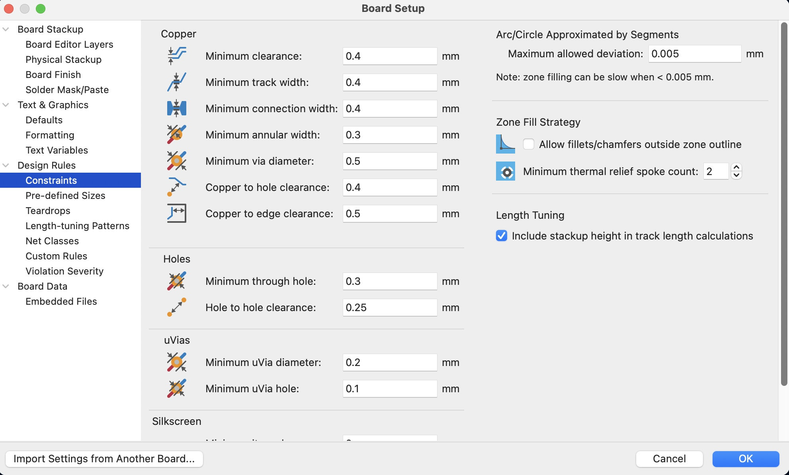
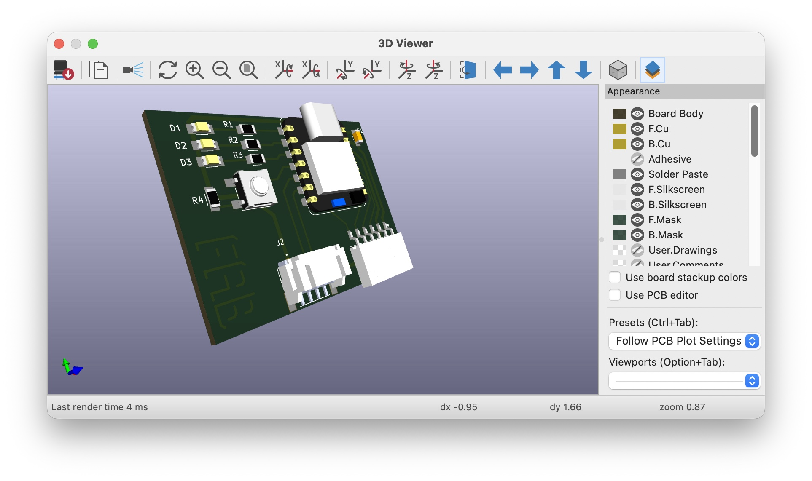
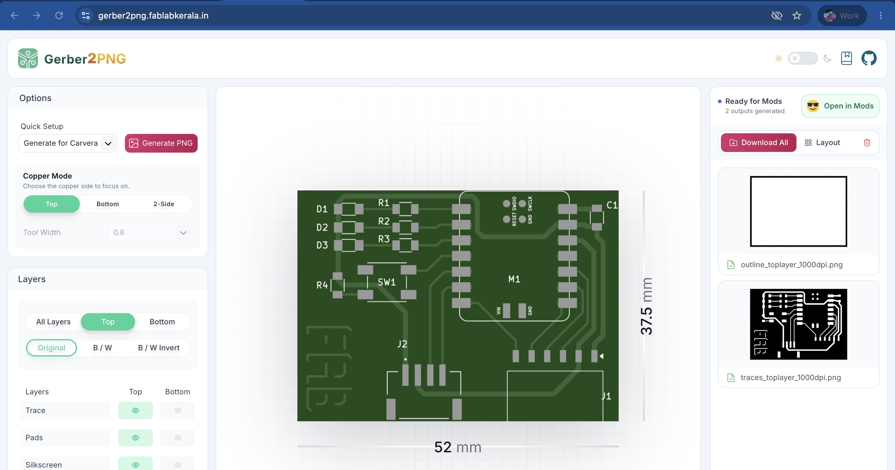

Electronics Design — schematic, PCB layout and 3D render of the PedestrianLight board
This week focused on electronics design — using EDA (Electronic Design Automation) tools to draw schematics and lay out a PCB, understanding design rules, and preparing files for fabrication.
New to electronics components? Scroll to the bottom for a quick reference guide — Getting a Grip on the Components.

Simulation (Wokwi)
Wokwi is a free, browser-based electronics simulator that lets you build and test circuits without any physical hardware. It supports a wide range of microcontrollers — including the Raspberry Pi Pico, Arduino, and ESP32 — and simulates components like LEDs, buttons, sensors, and displays in real time. You write code directly in the browser, run the simulation, and interact with the virtual components just as you would with real hardware. It is particularly useful for prototyping and debugging before committing to a physical build.
Pedestrian Traffic Light
The circuit simulates a pedestrian crossing light using a Raspberry Pi Pico, three LEDs (red, yellow, green), and a push button. Project files: Pedestrian Light.zip
How the code works:
- On startup, the green LED turns on — traffic flows normally.
- When the pedestrian presses the button, the pin is pulled LOW (to GND). The code detects this and begins the crossing sequence.
- Green → Yellow (1 second) — warning that the light is about to change.
- Yellow → Red (4 seconds) — traffic stops, pedestrians cross.
- Red → Yellow → off (500 ms) — brief amber before traffic resumes.
- Loop restarts — green comes back on.
The button is configured as
INPUT_PULLUP.
This means the pin is held HIGH internally (connected to 3.3 V through a resistor inside the chip),
and pressing the button connects it to GND, pulling it LOW.
A pull-down configuration is the opposite — the pin sits at GND by default and goes HIGH when pressed.
Pull-up is more common on microcontrollers because most MCUs have built-in pull-up resistors,
so no external resistor is needed on the breadboard.

Electronics Design (KiCad)
KiCad is a free, open-source EDA (Electronic Design Automation) suite used to design printed circuit boards. It takes a circuit from concept to fabrication-ready files — you draw the schematic, lay out the PCB, verify the design, and export Gerber files for manufacturing. KiCad is widely used in the maker and open-hardware community and is the standard tool used at Fab Labs for board design.
Note: Install the KiCad FabLib from Tools → Plugin and Content Manager. This makes it easy to define footprints for producing PCBs at a standard Fab Lab.
KiCad Work Flow
- Schematic Editor — Draw the circuit diagram by placing component symbols and connecting them with wires. This defines the logical connections between all parts before any physical layout begins.
- PCB Editor — Import the schematic netlist and arrange component footprints on the board. Route copper traces between pads, set board outline, and apply design rules for track width and clearance.
- 3D Viewer — Preview a realistic 3D render of the finished board with components placed, useful for checking component fit, orientation, and overall board aesthetics before sending to fabrication.

Schematic for Pedestrian Light using Pico
Place Symbol Tool — Components are added to the schematic using the Place Symbol tool on the right toolbar (or press A).
Search for the component by name, select it from the library, and click to place it on the canvas.
The FabLib components appear here once the library is installed.
Wiring with Labels — Components are connected either by drawing wires directly between pins,
or by using net labels (press L). Labels are especially useful for keeping the schematic clean —
two pins with the same label are electrically connected without needing a visible wire between them.
This avoids long crossing wires and makes the schematic much easier to read.
Electrical Rule Check (ERC) — Once the schematic is complete, run the ERC from the Inspect menu. It checks for common errors such as unconnected pins, conflicting pin types, or missing power flags. All ERC errors should be resolved before moving to the PCB editor to avoid issues during layout.

PCB Editor
After completing the schematic, open the PCB Editor and import the netlist. Footprints from the schematic appear as unplaced components connected by ratsnest lines showing the required connections.
Component Arrangement — Place components on the board by dragging footprints into position. Group related parts together — for example, keeping resistors close to the LEDs they limit. Good placement minimises the length and number of crossing traces during routing.
Routing — Use the Route Track tool (X) to draw copper traces between pads, following the ratsnest lines.
Edge Cut — The board outline is drawn on the Edge.Cuts layer. Switch to this layer and use the draw tools to define the physical boundary of the PCB. Everything outside the edge cut will be removed during fabrication, so make sure all components and traces sit within it.
Design Rule Check (DRC) — Run the DRC from the Inspect menu once routing is complete. It flags clearance violations, unrouted nets, and copper outside the board outline. All errors must be resolved before exporting files for fabrication.

Points to Note
Before routing, set the design constraints in File → Board Setup → Design Rules → Constraints. These define the minimum dimensions the PCB mill can reliably cut and ensure the exported files are manufacturable at the Fab Lab.
Clearance and Track Width for Milling — Set minimum clearance and minimum track width to 0.4 mm. This matches the diameter of the milling bit used at most Fab Labs and ensures traces are spaced far enough apart to be cut cleanly without bridging. For ground and power traces where higher current is expected, use a track width of 0.8 mm for added reliability. Traces should be wide enough for the current they carry. Avoid sharp 90° corners; use 45° bends instead to reduce signal reflections and milling issues.
J1 and J2 Connectors — The board includes J1 (a power/programming header) and J2 (a general-purpose I/O connector). Adding these connectors means the board is not limited to the pedestrian light circuit — it exposes the Pico's pins so the board can be reprogrammed and reused for other purposes without needing to desolder or modify any components.

3D Viewer
The 3D Viewer (View → 3D Viewer) renders a realistic preview of the board with all components placed, giving a clear picture of what the physical board will look like before it is fabricated. It is useful for spotting issues that are not obvious in the flat PCB editor — such as components overlapping, silkscreen labels being obscured, or the board being larger than expected.
It is also a good way to verify that connectors have enough room to fit. In this design, the J2 connector and the USB-C port on the Pico module are both visible in the 3D view — checking here confirmed there was adequate clearance around them for cables to plug in without obstruction from neighbouring components.

Exporting Gerber Files
A Gerber file is the industry-standard format for describing a PCB design to fabrication machines. It contains separate files for each layer of the board — copper traces, board outline, silkscreen, solder mask, and drill holes — each encoded as a set of vector instructions that tell the machine exactly where to cut, mill, or expose.
To export from KiCad, go to File → Fabrication Outputs → Gerbers. Select the layers needed (F.Cu for the copper layer and Edge.Cuts for the board outline) and click Generate.
I used Gerber2PNG, a tool developed by FabLab Kerala and used by Fab Labs across the world, to convert the Gerber files into high-resolution PNG images for the milling machine. The tool renders the copper and outline layers, producing the precise black-and-white images that the milling workflow requires to trace and cut the board.
Getting a Grip on the Components
| Component | Type | Notes |
|---|---|---|
| Resistor | Passive | Limits current flow. Measured in Ohms (Ω). Value read from colour bands or printed SMD code. |
| Capacitor | Passive | Stores and releases energy in an electric field. Measured in Farads (F). Used for decoupling, filtering, and timing. Polarised types must face the correct direction. |
| Inductor | Passive | Stores energy in a magnetic field. Measured in Henrys (H). Used in power supplies and filters. Resists sudden changes in current. |
| Diode | Active | Allows current in one direction only (anode → cathode). Used for rectification and reverse-polarity protection. Stripe on body marks the cathode. |
| LED | Active | Emits light when current flows through it. Always needs a current-limiting resistor. Colour determines the forward voltage. |
| DigiKey LED Calculator | Tool | Free online calculator for sizing the LED resistor. Input supply voltage, forward voltage, and desired current to get the correct resistor value. |
| Forward Voltage | Concept | Minimum voltage required for a diode or LED to conduct. ~1.8 V for red, ~2.1 V for yellow/green, ~3.0–3.3 V for blue and white. |
| Zener Diode | Active | Operates in reverse breakdown at a fixed voltage. Used as a voltage reference or to clamp against voltage spikes. |
| Voltage Regulator | Active | Maintains a stable output voltage. Linear types (e.g. LM7805) are simple but waste energy as heat; switching regulators are more efficient. |
| Transistor | Active | Three terminals: Emitter, Base, Collector. A small Base current controls a larger Collector–Emitter current. Always check the data sheet for pinout and ratings — they vary between packages. |
| MOSFET | Active | Three terminals: Source, Gate, Drain. Voltage-controlled — no Gate current needed. N-channel turns on when Gate is HIGH; P-channel turns on when Gate is LOW. |
| Crystal | Passive | Vibrates at a precise frequency to provide an accurate clock signal for microcontrollers and communication ICs. |